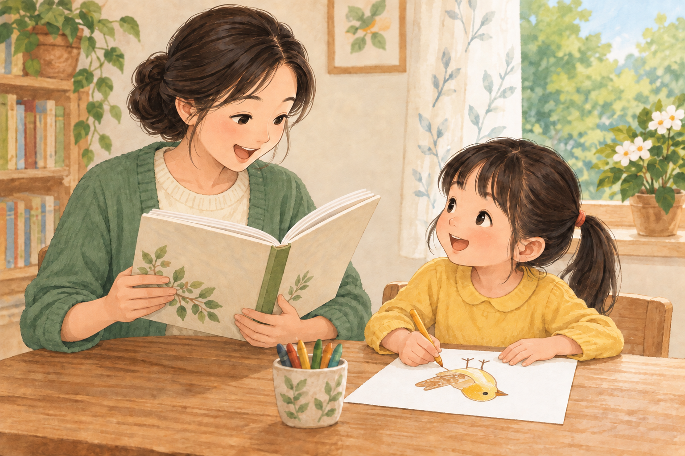

C024 · 读读画画

我读一句，你听一句；我说故事，你画小鸟。写字可以以后慢慢学。
修订提示词
Edit the attached picture-book illustration to fix the REMAINING drawing orientation. The mother's open reading book is ALREADY correct: its inside pages face her and only the outside cover faces the viewer; keep that exactly. The daughter is seated on the far side of the table, drawing a little bird on a sheet in front of her. ROTATE the sheet's bird drawing 180 DEGREES within the paper: the bird's HEAD and TOP point toward the far edge of the paper AWAY from the girl, its feet point toward the near edge CLOSEST to the girl, so it is upright to the girl's eyes and upside down to the viewer across the table. Keep her pencil tip touching the bird and her other hand on the sheet. Do not put the bird upright to the viewer. Preserve the two characters, anatomy, composition, warm gouache style, and landscape 3:2 format. No text, no watermark.